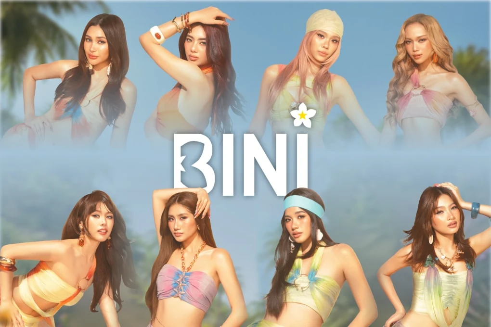

BINI: Ph's Top Girl Group
Discover the top Philippine girl group that's taking the music world by storm!
About BINI
BINI is a Filipino girl group formed by ABS-CBN's Star Magic. The group consists of eight members: Aiah, Colet, Maloi, Gwen, Stacey, Mikha, Jhoanna, and Sheena. They made their debut on June 11, 2021, with their single "Born to Win".
Known for their powerful vocals, synchronized dance moves, and captivating performances, BINI has quickly risen to become one of the Philippines' top girl groups. Their music spans various genres, including pop, R&B, and dance, appealing to a wide audience.
BINI's name stands for "Blooming In New Image," reflecting their goal to present a fresh and unique image in the Philippine music industry. The group has gained a significant following, both in the Philippines and internationally, thanks to their talent, hard work, and dedication to their craft.